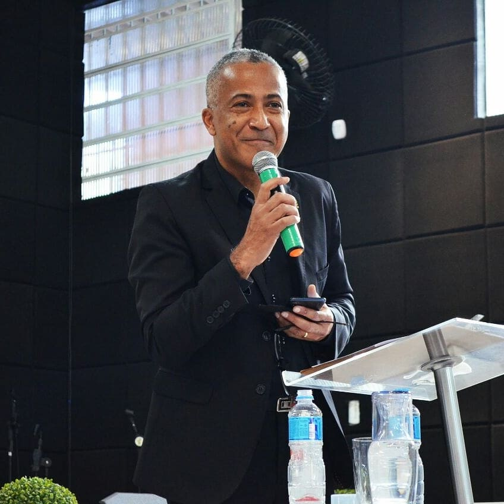
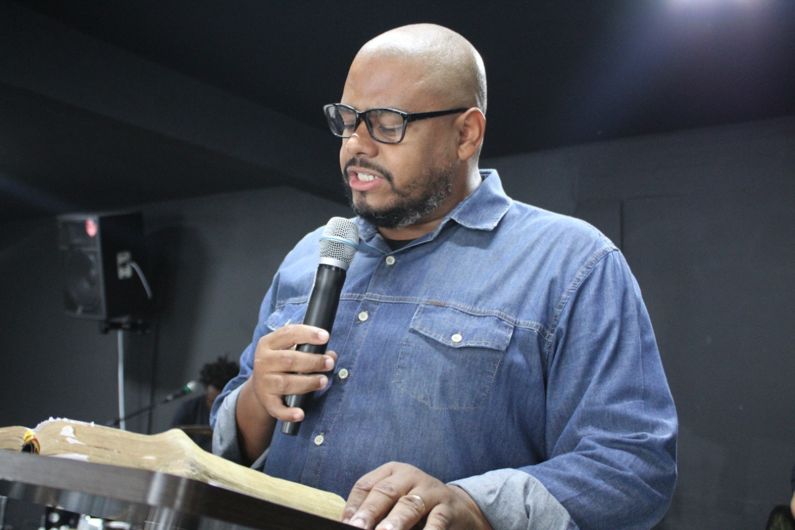
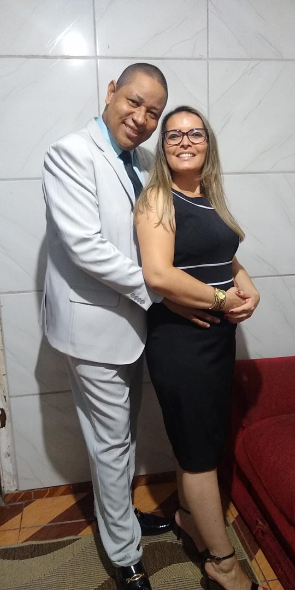
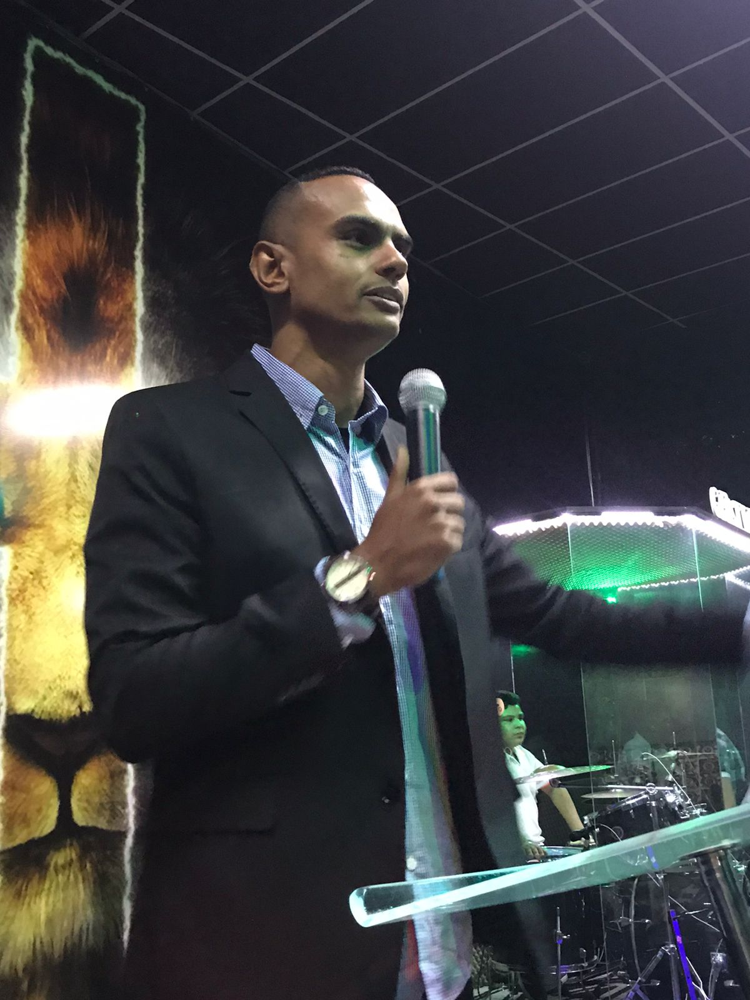

Pr. Paulo Victor
Igreja Adjan - Osasco - SP | 1º Primeira Edição
"Tive a honra de acompanhar o desenvolvimento do Projeto RM122. O que antes era um sonho, agora tornou-se realidade.
Não tenho dúvidas que esse projeto será uma ferramenta espiritual para transformação de vidas.
Parabéns a todos os RM's, fico orgulhoso e feliz em ver o reino de Deus sendo propagado de forma objetiva e impactante".
Pr.Jefferson Moraes
Igreja Evangélica Amor de Cristo | 1º Primeira Edição
"Tive a honra de acompanhar o desenvolvimento do Projeto RM122. O que antes era um sonho, agora tornou-se realidade.
Não tenho dúvidas que esse projeto será uma ferramenta espiritual para transformação de vidas.
Parabéns a todos os RM's, fico orgulhoso e feliz em ver o reino de Deus sendo propagado de forma objetiva e impactante".
Pr. Cristiane Silva de Alcantara
Comunidade Cristâ Ebenezer | 1º Primeira Edição
O projeto RM122 RADICAL para mim foi uma experiência única pois Vivi coisas maravilhosas nos três dias. Foram momentos que eu pude aprender muitas coisas e refletir também. Sempre tive medo de participar de eventos como: encontro com Deus e coisas do tipo, porém, participando do RM122 entendi que não era nada daquilo que eu pensava, pois já havia ouvido falar a respeito do encontro com Deus, tive pessoas que participaram e infelizmente não foi o que eu esperava. Mas aceitei o convite para passar pelo RM.
Foi uma experiência maravilhosa, até hoje fico refletindo sobretudo que vivi. “Gostaria de convidar você” a fazer parte das pessoas que não são conformadas e sim transformadas radicalmente para a Glória Deus.

Pr. Ricardo Alcântara
Comunidade Cristâ Ebenezer | 1º Primeira Edição
O projeto RM122 radical está sendo uma mudança de mentalidade para mim. A primeira edição, achei que tinha sido bom, mais descobrir que trabalhar é muito melhor.
Minha meta é passar todos da igreja que sou pastor.

Pr. Antônio Cássio Santos
Igreja Apostólica Bezalel | 1º Primeira Edição
O projeto RM122 RADICAL para mim foi uma experiência única pois Vivi coisas maravilhosas nos três dias. Foram momentos que eu pude aprender muitas coisas e refletir também. Sempre tive medo de participar de eventos como: encontro com Deus e coisas do tipo, porém, participando do RM122 entendi que não era nada daquilo que eu pensava, pois já havia ouvido falar a respeito do encontro com Deus, tive pessoas que participaram e infelizmente não foi o que eu esperava. Mas aceitei o convite para passar pelo RM.
Foi uma experiência maravilhosa, até hoje fico refletindo sobretudo que vivi. “Gostaria de convidar você” a fazer parte das pessoas que não são conformadas e sim transformadas radicalmente para a Glória Deus.

Pr. Guilherme Oliveira
Igreja Evangélica Justiça Divina | 2º Segunda Edição
Para mim foi um prazer conhecer esse grande projeto que é o Rm122 radical,
foi impactante ver o agir de Deus. Verdadeiramente minha família foi transformada e liberta de traumas que eu nem sabia que existia,
louvo a Deus por toda a liderança desse grande projeto e com certeza quero estar juntos para que muitas pessoas também tenham suas vidas
transformadas.